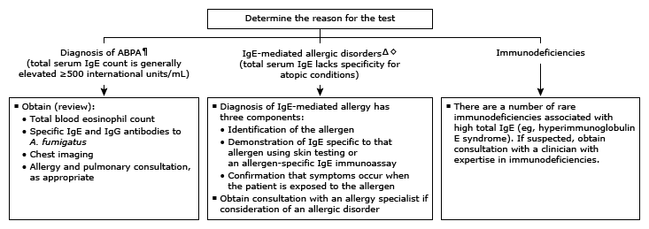

ABPA: allergic bronchopulmonary aspergillosis; IgE: immunoglobulin E; IgG: immunoglobulin G.
* Normal serum levels in adults range from undetectable to 100 international units/mL (2.44 ng/mL). Interpretation of a specific abnormal test result should be based upon the reference range reported by the laboratory.
¶ ABPA is one of the few disorders in which total IgE values are used directly in the diagnosis and treatment. The ubiquitous mold A. fumigatus causes localized, immunologic-mediated damage in the lung, typically in patients with asthma or cystic fibrosis. Refer to the UpToDate table on ABPA diagnostic criteria.
Δ Total IgE levels are rarely indicated for diagnosis or management of allergic or other disorders due to lack of specificity and significant overlap between allergic and nonallergic individuals. Refer to the UpToDate table on conditions associated with elevated serum IgE.
◊ Laboratory tools for diagnosis of parasitic infections associated with elevated total IgE levels (eg, ascariasis, schistosomiasis, and strongyloidiasis) include stool testing and serology rather than total IgE levels.